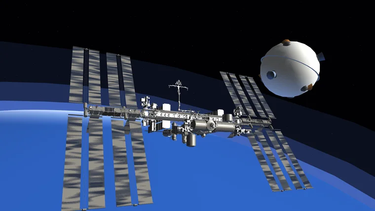
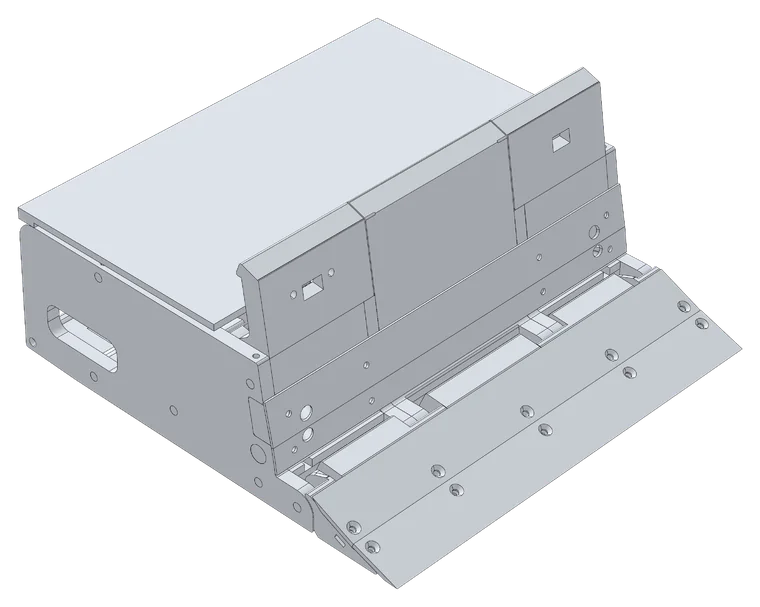
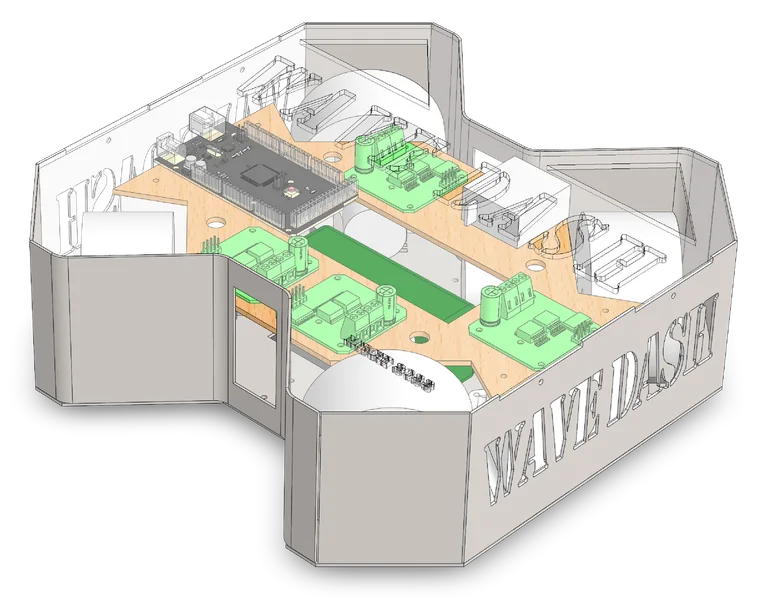
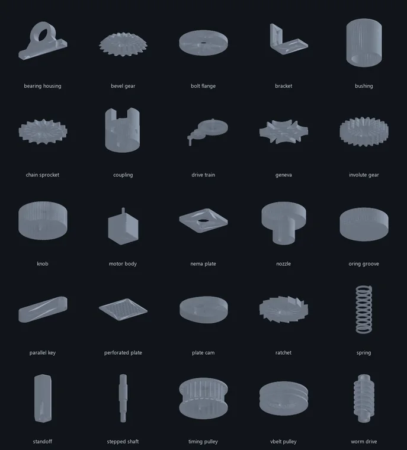
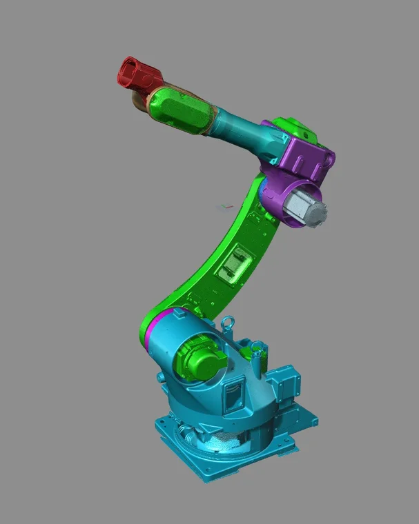

Mechanical engineering portfolio
I design machines, then build them.
I'm Temur Makharadze, a final-year mechanical engineering student in Tbilisi. I work in SolidWorks every day, machine parts on CNC mills at Nasolutions, and build competition robots. Next: a research internship at Forschungszentrum Jülich in February 2027, then a master's in Germany.
Projects

Sphere-1: a free-flying inspection drone for orbit
A 23 cm, 500 g drone that leaves a spacecraft and looks back at it. Eight cold-gas nozzles, 10 g of CO2, six-axis control, and a flight controller validated on hardware.

3 kg sumo robot
Built from scratch: an aluminium chassis I machined myself, a 6.44:1 gearbox of hardened stainless gears, and magnets for traction.

Wave Dash: omni-wheel football robot
A remote-controlled robot footballer on four omni wheels, redesigned mid-project and cut down to 3.9 kg with topology studies.

PartForge
A parametric CAD generator for standard mechanical parts: 25 generators that build exact geometry from engineering inputs, check it against the standards, and send it into SolidWorks, Fusion or a laser cutter.

Reverse engineering a robot arm from 3D scans
An industrial robot arm stripped to its last piece and 3D scanned part by part, as the basis for the CAD work behind its rebuild with new motors and CNC-cut parts.

Hand-drafted technical drawings
Eight A3 pencil drawings: sections, assemblies with parts lists, a gear shaft and threaded joints.